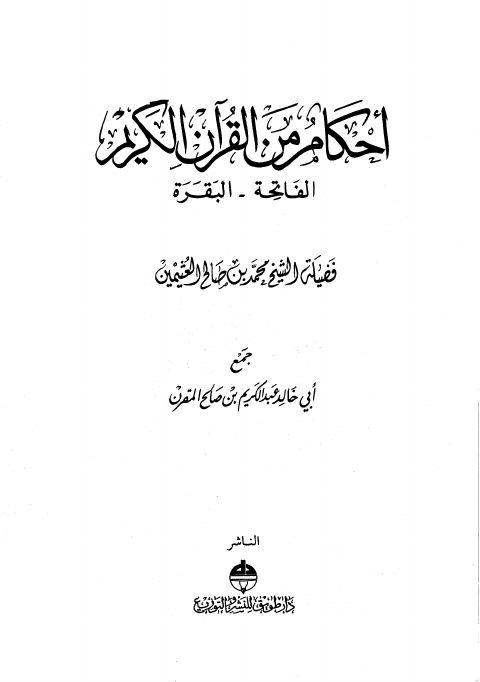

Downloads need an internet connection.
أحكام من القرآن الكريم- ط طويق
Authors: محمد بن صالح العثيمين
Editors: عبد الكريم بن صالح المقرن
Publishers: دار طويق
**▫️ العنوان: أحكام من القرآن الكريم- ط طويق** ▪️ المؤلف: #محمد_بن_صالح_العثيمين ▫️ المحقق: #عبد_الكريم_بن_صالح_المقرن ▪️ الناشر: #دار_طويق_للنشر_والتوزيع ▫️ تاريخ النشر: 1995م 1415هـ ▪️ بلد النشر: الرياض، #السعودية ▫️ الطبعة: 1 ▪️ عدد الأجزاء: 1 ▫️ الصفحات: 528 ▪️ نوع الوعاء: #كتاب ▫️ التصنيف الرئيسي: #التفسير_وعلوم_القرآن ▪️ التصنيف الفرعي: #أحكام_القرآن ۪